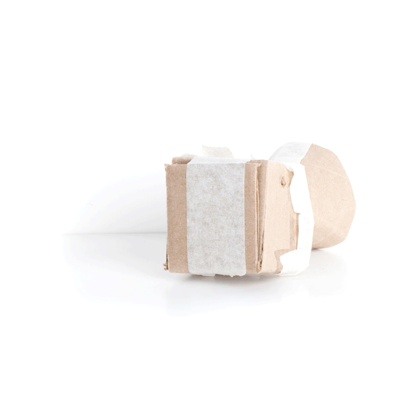
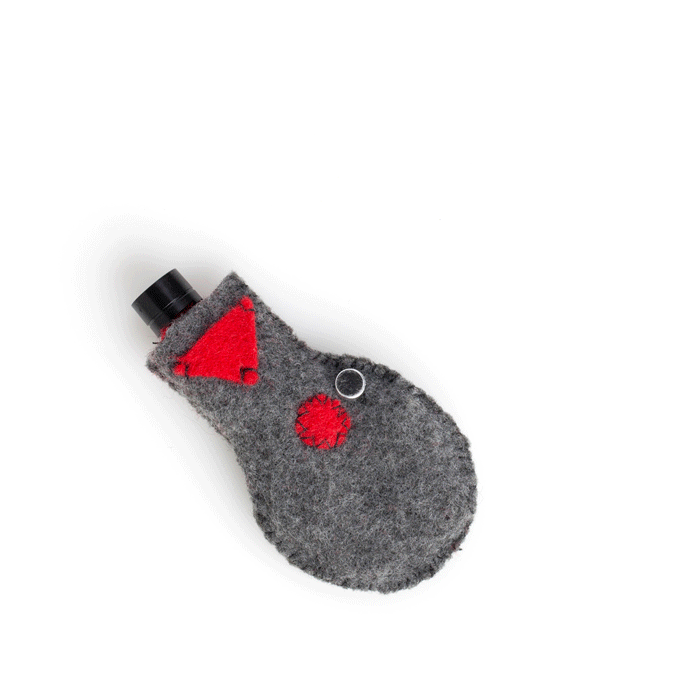
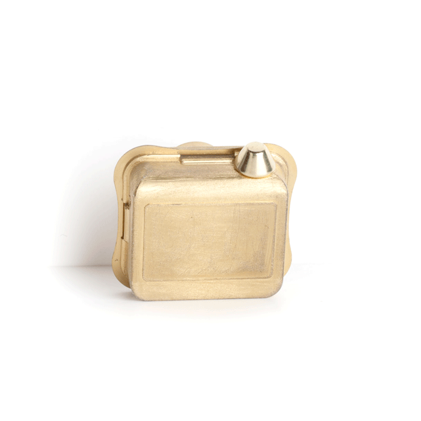

We take pictures of every most mundane moment of our lives but everything ends up in an infinite digital space of forgetting. Unlimited and effortless quantity is at odds with the need to mark moments that are truly special.
The Sound Capsule inspires new yet simple human gesture: sound catching. It invites us to recognize in a new way moments, atmosphere, and mark them as special. Sound Capsule is an analog object that uses poetic potential of technology and evocative power of sound. With its one time recording function, Sound Capsule helps us mark unique moments and rescue them from digital obsolescence.


